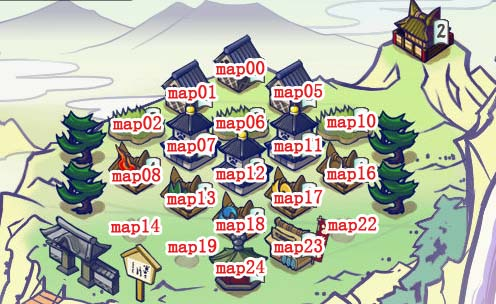

| 功能名 | 选项 |
|---|---|
| 自动升级 | 粮仓/水田/宝库 粮仓 水田 宝库 |
| 自动升级五行 | 火 风 水 木 空 |
| 自动建造 |
自动建造(新手任务后) map01粮仓 map05粮仓 map02水田 map10水田 map07宝库 map11宝库 map13修炼场-地 map18修炼场-水 map17修炼场-风 map16修炼场-空 |
| 功能名 | 选项 |
|---|---|
| 自动打怪 | 国战 打野 合战 道场 |
| 自动打怪类型设置 | 山贼 忍者 强盗 海贼 敌军 |
| 设置移动顺序 |
|
| 设置粮食最小值 |
| 功能 | 选项 |
|---|
| 功能 | 选项 |
|---|
| 功能名 | 选项 |
|---|---|
| 自动养成 | 自动升级卡片 |
| 设置卡片升级资源最小值 | |
| 要升级的卡片名字 | |
| 要升级的卡片属性 | 火 地 风 水 空 |
| 要升级的卡片对应修炼场地址 | |
| 地图位置对应图 |  |
| 功能名 | 选项 |
|---|---|
| 自动执行间隔 | |
| 是否自动切换页面 | |
| 保存地址: | |
| 用户ID |